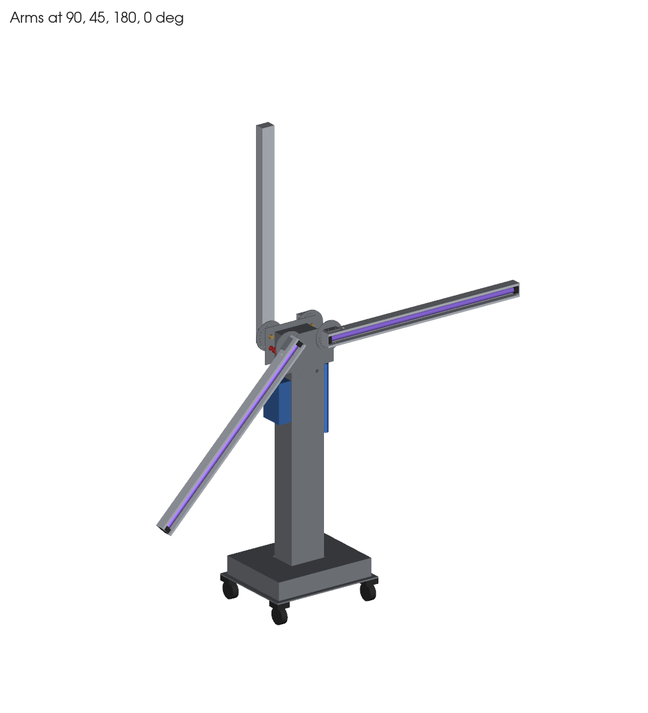
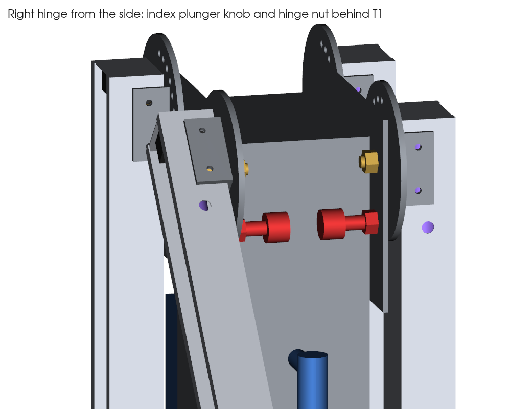
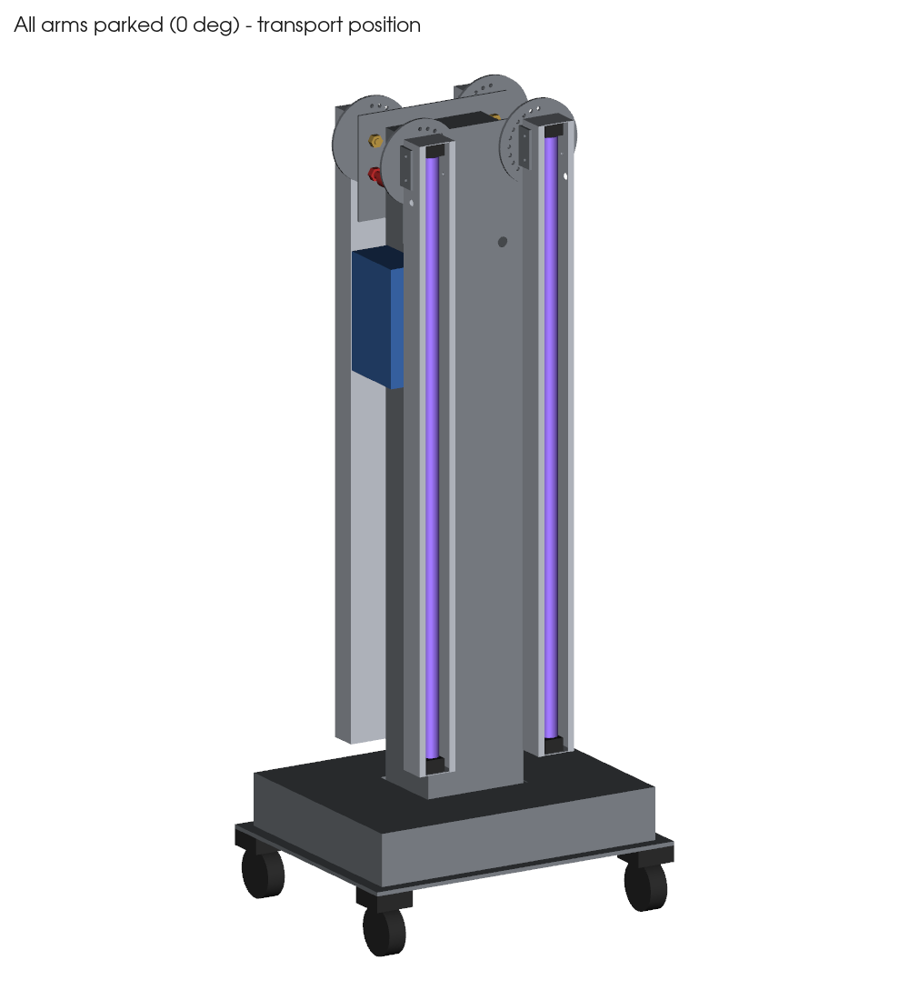
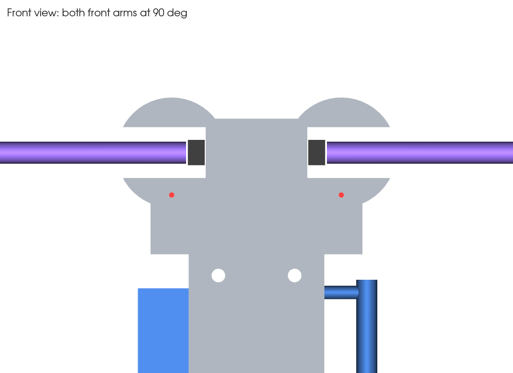

لیست خرید و برنامه تولید
پایه UV-C چهاربازو ۳۰ وات · طرح نهایی · ۱۸ مهر ۱۴۰۵ · همهٔ ابعاد به میلیمتر
مسیر پیشنهادی (به همین ترتیب بروید)
۱ لوازم برقی و روشنایی۲ چرخ و یراق صنعتی۳ پیچ و مهره
۴ برش لیزر + ورق۵ خمکاری (پرسبرک)۶ جوشکاری و ساخت۷ رنگ پودری
چرا اول لوازم برقی؟ لامپ و سرپیچ و چرخ باید قبل از برش خریده و اندازهگیری شوند. اگر فاصلهٔ دو سرپیچ با لامپ واقعی ۹۰۸ یا ارتفاع چرخ ۱۰۰ نبود، قبل از رفتن به برش لیزر خبر بدهید تا فایلها اصلاح شوند.
با خودتان ببرید:
- فلش حاوی پوشههای dxf/ (برای لیزر) و step/ (مدل سهبعدی برای کارگاه)
- همین PDF چاپشده و تصاویر صفحهٔ آخر برای نشان دادن به کارگاه
- متر و کولیس برای اندازهگیری لامپ، سرپیچ و چرخ در محل
آدرس مغازهٔ مشخصی در این لیست نیامده است. برای هر ایستگاه نوع مغازه نوشته شده. با جستجوی همان عنوان در نقشه یا دیوار، نزدیکترین را پیدا کنید و قبل از رفتن تماس بگیرید. بیشتر برشلیزرها خمکاری هم دارند و ورق را هم خودشان تهیه میکنند؛ این یعنی ایستگاه ۴ و ۵ معمولاً یکی میشوند.
۱لوازم برقی و روشنایی
جایی که بروید: فروشگاه لوازم برق صنعتی / روشنایی، یا فروشندهٔ لامپ UV-C و تجهیزات ضدعفونی
| قلم | مشخصات | تعداد | قیمت |
|---|
| لامپ UV-C | T8، ۳۰ وات، ۲۵۳٫۷ نانومتر، پایه G13، طول حدود ۸۹۵ با پین | ۴ (+۱ یدک) | |
| سرپیچ G13 فنری | سرامیکی یا فلزی، مقاوم UV؛ پلاستیک معمولی نه | ۸ | |
| باالست الکترونیک | مخصوص لامپ T8 سیوات UV-C (یا ۲ عدد دوبل ۲×۳۰) | ۴ | |
| تایمر دیجیتال | با تأخیر شروع قابل تنظیم ۳۰ تا ۶۰ ثانیه، ریلی یا پنلی | ۱ | |
| سنسور حرکت PIR | زاویهٔ دید ≥۱۱۰°، خروجی رله | ۱ تا ۲ | |
| رله یا کنتاکتور | بوبین ۲۲۰ ولت، برای قطع با PIR (روشن شدن دوباره فقط دستی) | ۱ | |
| کلید سوئیچی (قفلدار) | دو حالته، کلید از دستگاه جدا شود | ۱ | |
| شستی استاپ اضطراری | قارچی قرمز، کنتاکت NC | ۱ | |
| ساعتشمار کارکرد | ۲۲۰ ولت، پنلی | ۱ | |
| چراغ هشدار «UV روشن» | LED، ۲۲۰ ولت، رنگ قرمز یا بنفش | ۱ | |
| فیوز + جافیوزی | ۲ آمپر | ۱ | |
| کابل سیلیکونی یا تفلونی | ۴×۰٫۷۵، مقاوم UV و حرارت (PVC معمولی ممنوع) | ۸ متر | |
| کابل برق ورودی + دوشاخه ارتدار + گلند | ۳×۱، طول ۳ متر | ۱ | |
| ترمینال ریلی + ریل امگا | برای جعبهٔ باالست | ۱۲ عدد | |
| سیم ارت زرد-سبز + سرسیم | ۱٫۵ میلیمتر، برای ستون، پایه و هر بازو | ۳ متر | |
| برچسب هشدار UV-C | روی هر بازو و روی پنل | ۵ | |
در همین مغازه اندازه بگیرید: لامپ را داخل دو سرپیچ بگذارید و فاصلهٔ داخلی دو سرپیچ را بخوانید (باید حدود ۹۰۸ باشد). عمق هر سرپیچ را هم بنویسید (حدود ۲۰). اگر فرق داشت، قبل از برش آلومینیوم خبر بدهید.
۲چرخ و یراق صنعتی
جایی که بروید: فروشگاه چرخ صنعتی، و فروشگاه یراقآلات صنعتی / لوازم قالبسازی (برای پین فنری)
| قلم | مشخصات | تعداد | قیمت |
|---|
| چرخ گردان | Ø۷۵، روکش PU، صفحهدار، ارتفاع کل حدود ۱۰۰ | ۲ | |
| چرخ گردان ترمزدار | همان مدل، با ترمز | ۲ | |
| پین فنری قفل (ایندکس پلانجر) | M12×1.5، پین Ø۶، مدل با حالت استراحت (کشیدن + یک ربع چرخاندن = پین بیرون میماند)، مثل GN 617.1 / GN 817.1 | ۴ (+۱ یدک) | |
| بوش برنجی فلنجدار | داخل Ø۱۰، بیرون Ø۱۴، طول ۱۰ (اگر آماده نبود، تراشکار میسازد) | ۴ | |
| واشر تفلونی | Ø۳۰ / Ø۱۴ × ۱ (یا ورق تفلون ۱ میلی برای بریدن) | ۴ | |
| گرومت لاستیکی | برای سوراخ Ø۱۶ ورق ۱٫۵ | ۲ | |
| گرومت فلزی / گلند | برای سوراخ Ø۱۰ ورق آلومینیوم | ۴ | |
| لوله استیل یا آهنی | Ø۲۵، برای دستهٔ هلدادن (۳۰۰ + ۲ پایه ۵۰) | ۰٫۵ متر | |
| مفتول استیل | Ø۳، برای ۴ گارد لامپ ۵۰×۹۲۰ (+ گیره) | ۱۰ متر | |
در همین مغازه چک کنید:
- چرخ: ارتفاع از زمین تا بالای صفحه را بخوانید (فرض ما ۱۰۰ است). فاصلهٔ سوراخهای صفحهٔ چرخ را هم بخوانید (فرض ما ۴۵×۴۵ است).
- پین فنری: قطر دسته (فرض ما Ø۲۵) و طول بدنه پشت صفحه (حدود ۴۶) را بخوانید.
اگر عددی فرق داشت، عکس بگیرید و بفرستید تا فایل لیزر اصلاح شود.
۳پیچ و مهره
جایی که بروید: فروشگاه پیچ و مهره و ابزار (پرچمهره و انبر پرچمهره را هم همینجا بپرسید)
| قلم | مشخصات | تعداد | کاربرد |
|---|
| پیچ سرگرد آلن | ISO 7380 M10×30، گرید ۸٫۸ | ۴ | محور لولا (سر داخل ناودانی) |
| مهرهٔ نایلوندار M10 + واشر تخت | DIN 985 | ۴ + ۸ | پشت صفحهٔ سر، روی محور |
| مهرهٔ جوشی M12×1.5 | ششگوش، رزوه ریز | ۴ | پشت صفحهٔ سر برای پین فنری |
| پیچ خزینه آلن M8×12 | گرید ۸٫۸ | ۱۲ | صفحههای سر به ستون |
| پرچمهره M8 (ریوتناتی) | برای ورق ۱٫۵ | ۱۲ (+۴) | روی ستون؛ انبر پرچمهره هم لازم است |
| پیچ سرگرد M5×12 + مهرهٔ نایلوندار | استیل | ۱۶ | براکت بازو به دیوارهٔ ناودانی |
| پیچ M10×30 + مهره + ۲ واشر | گرید ۸٫۸ | ۴ | فلنج ستون به صفحهٔ پایه |
| پیچ M8×20 + مهرهٔ نایلوندار + واشر | یا طبق سوراخ صفحهٔ چرخ | ۱۶ | چرخها |
| پرچ پاپ / پیچ پرچ M4 | آلومینیومی | ۳۲ | درپوش سر بازو |
| پیچ سرخزینه M4 + مهره | طبق سرپیچ G13 | ۱۶ | سرپیچها روی درپوش |
| پیچ خودکار M4 یا پیچ پرچ | — | ۲۰ | درب سرویس، جعبهٔ پنل، جعبهٔ باالست |
| واشر دندانهدار M10 | برای اتصال ارت از طریق محور | ۴ | ارت بازوها |
۴برش لیزر (همراه با تهیهٔ ورق)
جایی که بروید: کارگاه برش لیزر ورق فلزی. بپرسید ورق را خودشان تهیه میکنند یا نه؛ معمولاً بر اساس کیلو حساب میکنند.
| فایل DXF | قطعه | ورق | تعداد | نکته برای کارگاه |
|---|
| B1_base_plate_6mm | صفحهٔ پایه ۵۰۰×۴۰۰ | فولاد ۶ | ۱ | سوراخهای چرخ را با چرخ واقعی چک کنید |
| C1_flange_6mm | فلنج ستون ۲۶۰×۲۲۰ | فولاد ۶ | ۱ | — |
| H2_index_disc_5mm | دیسک تقسیم Ø۱۳۰، ۱۳ سوراخ | فولاد ۵ | ۴ | سوراخها Ø۵٫۸ بزنید و بعد با برقو Ø۶ H8 کنید. هر ۴ دیسک یکساناند؛ برای دو بازوی چپ، دیسک برعکس نصب میشود |
| T1_head_plate_4mm | صفحهٔ سر ۲۵۰×۱۶۰ | فولاد ۴ | ۲ | ۶ سوراخ Ø۹ را از جلو خزینه کنید (M8) |
| H1_bracket_blank_4mm | براکت U بازو، بلانک ۱۲۰×۶۰ | فولاد ۴ | ۴ | طول گسترده را با ضریب خم خودتان چک کنید |
| C1_gusset_4mm | لچکی ۵۰×۶۰ | فولاد ۴ | ۴ | — |
| — | درپوش سر ستون ۱۶۰×۱۲۰ | فولاد ۴ | ۱ | مستطیل ساده |
| — | بدنهٔ ستون، دو تکه U | فولاد ۱٫۵ | ۲ | هر تکه حدود ۲۸۰×۱۰۵۰ گسترده: کف ۱۶۰ + دو لبهٔ ۶۰. سوراخها بعد از جوش طبق مدل STEP زده شوند |
| — | جعبهٔ باالست B2 | فولاد ۱٫۵ | ۱ | بلانک حدود ۶۲۰×۵۲۰ (سقف ۴۶۰×۳۶۰ + دیوارهٔ ۸۰) با سوراخ ستون ۱۷۰×۱۳۰ |
| C2_service_door_1.2mm | درب سرویس ۱۲۰×۶۰۰ | فولاد ۱٫۲ | ۱ | — |
| — | جعبهٔ پنل کنترل ۶۰×۱۱۰×۱۸۰ | فولاد ۱٫۲ | ۱ | جای تایمر، کلید، استاپ و ساعتشمار را بعد از خرید روی آن پیاده کنید |
| A1_arm_blank_1mm | بدنهٔ بازو ۹۵۰×۱۷۰ | آلومینیوم ۱ آینهای | ۴ | آلومینیوم با رویهٔ آینهای یا آنودایز براق؛ رویهٔ براق داخل ناودانی باشد. محافظ نایلونی را تا آخر نکنید |
| A2_end_cap_blank_1mm | درپوش سر بازو | آلومینیوم ۱ | ۸ | — |
مقدار تقریبی ورق (برای پرسیدن قیمت)
| ورق | قطعات | وزن تقریبی خالص |
|---|
| فولاد ST37 ضخامت ۶ | صفحهٔ پایه + فلنج | حدود ۱۲ کیلو |
| فولاد ST37 ضخامت ۵ | ۴ دیسک تقسیم | حدود ۳ کیلو |
| فولاد ST37 ضخامت ۴ | صفحههای سر، براکتها، لچکیها، درپوش ستون | حدود ۴٫۵ کیلو |
| ورق روغنی ۱٫۵ | ستون + جعبهٔ باالست | حدود ۱۱ کیلو |
| ورق روغنی ۱٫۲ | درب سرویس + جعبهٔ پنل | حدود ۱٫۵ کیلو |
| آلومینیوم ۱ آینهای | ۴ بازو + ۸ درپوش | یک ورق ۱۰۰۰×۱۰۰۰ کافی است (حدود ۰٫۷ متر مربع لازم است) |
۵خمکاری (پرسبرک)
جایی که بروید: معمولاً همان کارگاه لیزر؛ اگر نه، کارگاه خم ورق (پرسبرک)
| قطعه | خم | تعداد |
|---|
| بدنهٔ بازو A1 | ناودانی: لبه ۱۰ / دیواره ۴۵ / کف ۶۰ / دیواره ۴۵ / لبه ۱۰؛ لبهها به داخل برگردند. طول ۹۵۰ | ۴ |
| درپوش سر بازو A2 | سه لبهٔ ۱۰ دور صفحهٔ ۵۸×۴۴ | ۸ |
| براکت H1 | U: کف داخلی ۶۰ (روی ناودانی بنشیند)، ساق ۲۶ | ۴ |
| بدنهٔ ستون C1 | دو U که روی هم باکس ۱۶۰×۱۲۰ بسازند، طول ۱۰۵۰ | ۲ |
| جعبهٔ باالست B2، جعبهٔ پنل C3 | جعبهٔ یکطرف باز | ۱ + ۱ |
بعد از خم، H1 را روی ناودانی A1 امتحان کنید که بدون لقی جا برود. سوراخهای M5 هر دو باید روی هم بیفتند.
۶جوشکاری و ساخت
جایی که بروید: کارگاه جوشکاری و ساخت قطعات فلزی (فابریکیشن)
| کار | نکته |
|---|
| دو U ستون را به هم جوش نقطهای یا پرچ کنید → باکس ۱۶۰×۱۲۰×۱۰۵۰ | وجههای ۱۶۰ جلو و پشتاند |
| درپوش ۴ میلی را بالای ستون جوش دهید | — |
| ستون را دقیقاً وسط فلنج جوش دهید + ۴ لچکی وسط هر وجه | ستون کاملاً عمود باشد (با گونیا) |
| دیسک H2 را وسط کف براکت H1 جوش دهید | سوراخ وسط هر دو (Ø۱۴) دقیقاً هممحور باشد؛ با یک میله Ø۱۴ نگه دارید و جوش دهید |
| مهرهٔ جوشی M12×1.5 را پشت هر T1 روی سوراخ پین جوش دهید | عمود و هممحور با سوراخ؛ قبل از جوش با پین امتحان کنید |
| سوراخکاری ستون طبق مدل: ۱۲ سوراخ Ø۱۰ برای پرچمهره + ۲ سوراخ Ø۱۶ کابل | بهتر است T1 را روی ستون بگذارید و از روی آن مارک کنید |
| دستهٔ هلدادن: لوله Ø۲۵ با دو پایهٔ ۵۰، روی وجه راست ستون | بالای دسته در ارتفاع ۱۰۰۰ از زمین |
| جعبهٔ پنل روی وجه چپ ستون، لبهٔ بالا ۹۹۰ از زمین | جوش یا پیچ |
| درب سرویس روی وجه پشت: بازشو ۱۰۰×۵۸۰ از ارتفاع ۳۱۰ ببرید | درب ۱۲۰×۶۰۰ با ۴ پیچ |
| گارد مفتولی ۴ عدد ۵۰×۹۲۰ از مفتول Ø۳ | با گیره روی لبههای ناودانی کلیپس شود |
| بوش برنجی (اگر آماده نبود): Ø۱۰/Ø۱۴ طول ۱۰ با فلنج Ø۲۰×۱ | تراشکاری |
۷رنگ پودری
جایی که بروید: کارگاه رنگ الکترواستاتیک (پودری)
| قطعات | نکته |
|---|
| ستون با فلنج، صفحهٔ پایه، جعبهٔ باالست، درب سرویس، جعبهٔ پنل، دسته، T1 ها، براکتها با دیسک | رنگ سفید یا طوسی روشن |
| ماسک کردن قبل از رنگ: رزوهٔ مهرههای جوشی M12، پرچمهرهها، سوراخهای Ø۱۴ دیسک و براکت، و سوراخهای ۱۳ تایی دیسک | رنگ در سوراخها پین و بوش را گیر میاندازد |
| یک نقطهٔ بدون رنگ برای پیچ ارت روی ستون، پایه و هر براکت | ارت الزامی است |
| بازوهای آلومینیومی رنگ نمیشوند (داخلشان رفلکتور است) | — |
تصاویر برای نشان دادن به کارگاه




ترتیب مونتاژ بعد از برگشت قطعات
- چرخها را زیر صفحهٔ پایه ببندید. فلنج ستون را با ۴ پیچ M10 روی صفحه ببندید.
- باالستها، ترمینال و فیوز را روی صفحهٔ پایه نصب کنید و جعبهٔ B2 را رویشان بگذارید.
- پرچمهرههای M8 را در ستون بزنید. پینهای فنری را در مهرههای جوشی T1 ببندید. هر T1 را با ۶ پیچ خزینه روی ستون ببندید.
- سرپیچها را روی درپوشها و درپوشها را روی ناودانی ببندید. براکت را با ۴ پیچ M5 روی ناودانی ببندید.
- بازو را روی T1 سوار کنید: پیچ M10×30 از داخل ناودانی، بعد بوش برنجی، دیسک، واشر تفلونی و T1، و پشتش مهرهٔ نایلوندار. فقط آنقدر سفت کنید که بازو روان بچرخد ولی لق نباشد.
- قفل هر ۱۳ موقعیت را با پین امتحان کنید. بازو در ۰ درجه باید حدود ۵۰ میلیمتر بالای جعبهٔ باالست باشد.
- سیمکشی، ارت و تست عایقی را انجام دهید. بعد تأخیر شروع، قطع با PIR و استاپ اضطراری را تست کنید.
- لامپها و گاردها را نصب کنید. تست پایداری را انجام دهید و شدت تابش را در فاصلهٔ ۱ متر اندازه بگیرید.
ایمنی: UV-C در چند ثانیه به پوست و چشم آسیب میزند. هنگام تست، عینک و دستکش ضد UV بپوشید. دستگاه فقط در اتاق خالی روشن شود. قفل PIR و تأخیر شروع نباید قابل حذف باشند.